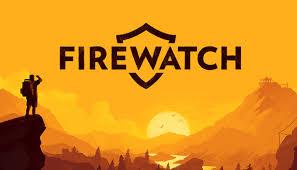

Firewatch é um jogo de aventura e exploração desenvolvido pela Campo Santo. O jogo acompanha Henry, um homem que decide trabalhar como vigia florestal em uma reserva natural isolada após enfrentar problemas pessoais em sua vida. Durante o verão, ele passa seus dias observando a floresta e se comunicando por rádio com Delilah, sua supervisora. O gameplay é focado na exploração dos cenários, diálogos e descoberta de mistérios espalhados pela floresta. Diferente de jogos tradicionais de ação, Firewatch aposta em uma narrativa mais lenta e emocional, criando uma experiência envolvente através das conversas entre os personagens. O jogador pode escolher diferentes respostas nos diálogos, influenciando a relação entre Henry e Delilah ao longo da história. Os gráficos possuem um estilo artístico muito elogiado, utilizando cores fortes e cenários inspirados em parques naturais reais dos Estados Unidos. A trilha sonora ajuda a criar uma atmosfera tranquila, mas também misteriosa em certos momentos. Conforme a história avança, acontecimentos estranhos começam a ocorrer na floresta, aumentando a tensão e a curiosidade do jogador. No geral, Firewatch é considerado um jogo marcante por sua narrativa madura e pela forma como desenvolve seus personagens.
16+ - recomendado para maiores de 16 anos
A história de Firewatch começa quando Henry decide aceitar um trabalho temporário como vigia florestal em uma reserva natural localizada nas montanhas de Wyoming. Procurando se afastar dos problemas de sua vida pessoal, ele passa a viver sozinho em uma torre de observação durante o verão, monitorando possíveis incêndios e explorando a região. A única pessoa com quem Henry mantém contato constante é Delilah, sua supervisora, que conversa com ele através de um rádio portátil. Aos poucos, os dois desenvolvem uma amizade enquanto compartilham experiências, preocupações e momentos de descontração. Durante a rotina na floresta, acontecimentos estranhos começam a surgir. Equipamentos desaparecem, áreas proibidas são descobertas e sinais de que alguém pode estar observando Henry aumentam o clima de mistério. Conforme o jogador investiga essas situações, novas informações sobre o passado da região começam a aparecer. A narrativa mistura momentos tranquilos de exploração com situações de tensão psicológica, mantendo o jogador curioso sobre o que realmente está acontecendo. O jogo também explora temas como solidão, arrependimento, responsabilidade e relações humanas. Ao longo da história, as escolhas nos diálogos ajudam a construir a personalidade de Henry e a relação entre os protagonistas, tornando a experiência mais pessoal e envolvente.
9 de fevereiro de 2016
Entre R$30 e R$80 (dependendo da plataforma e promoções)
Aproximadamente 4 GB